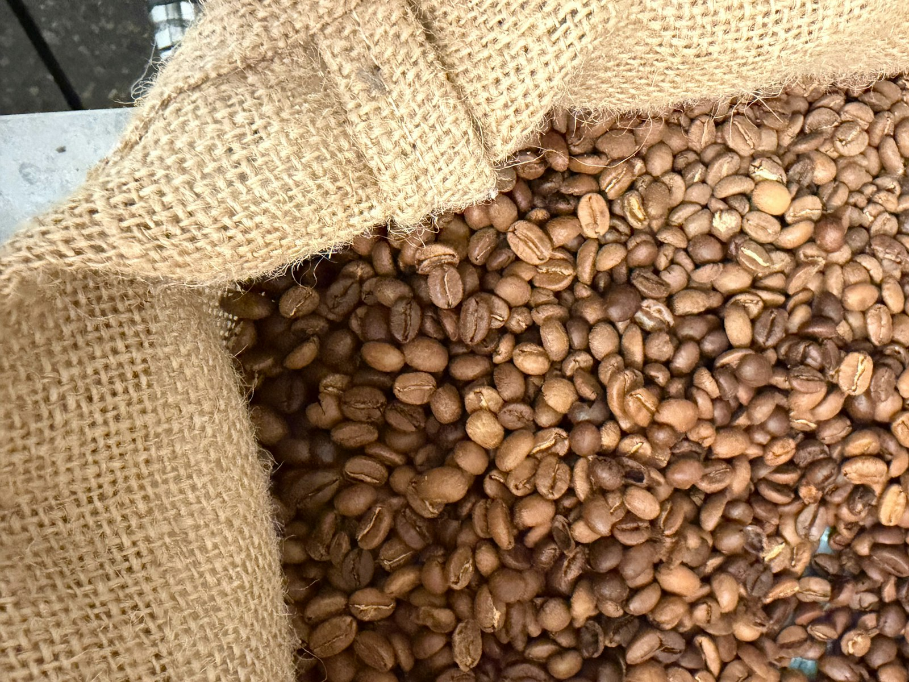
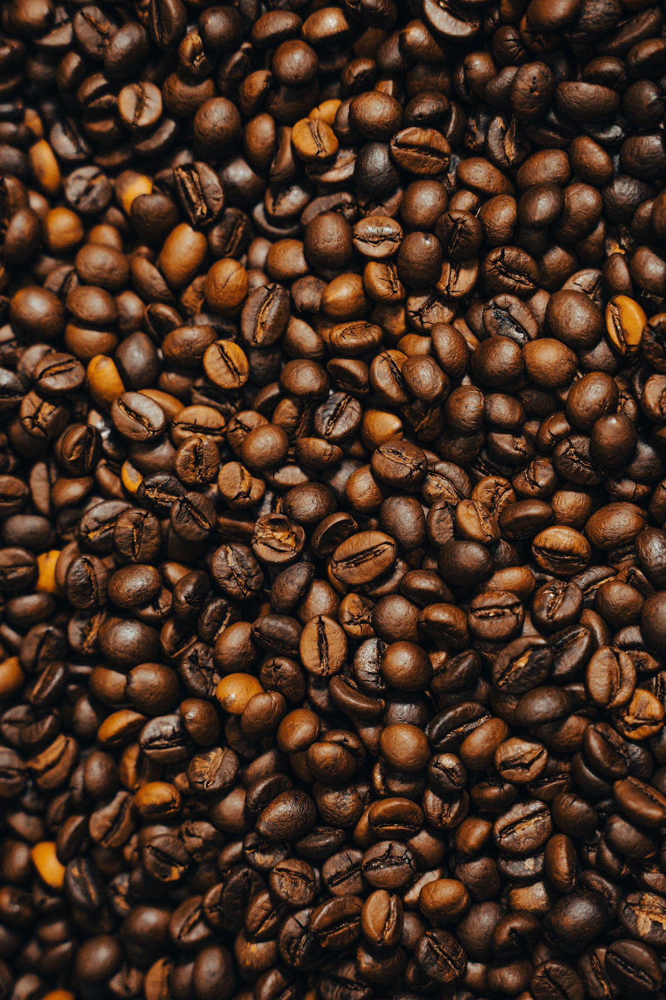
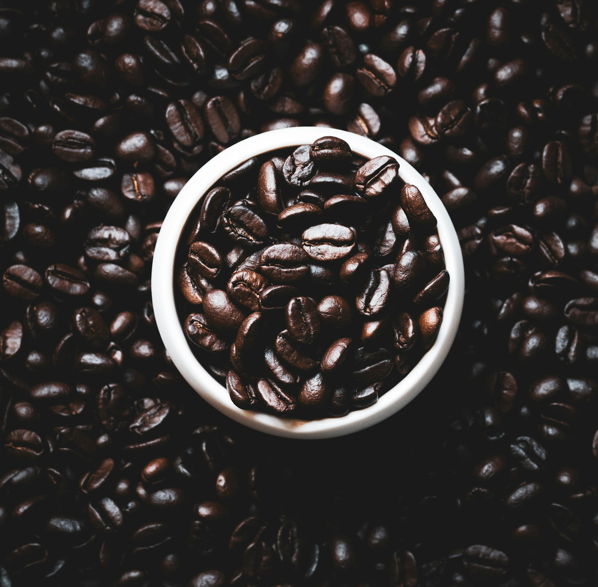
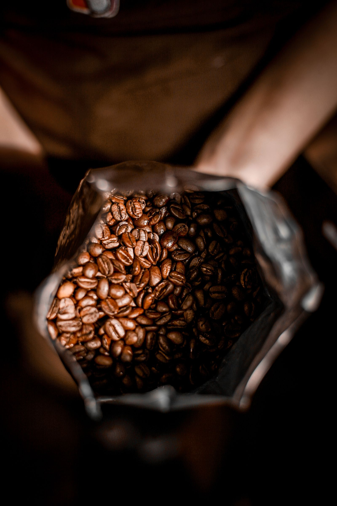

Platform Light
Light
- How it tastes
- Bright and clean, like a green apple.
- Good for
- Pour-over, AeroPress
Northline Coffee
Tell us what you're brewing. We'll tell you how much to grind and how fine.
Grind Tool
Pick your roast, how much you're brewing, and how. We'll do the math.
22 g
beans to grind
Brew Guides
Each one fits on a card. The numbers come from the same table as the Grind Tool.
Our Roasts

Light

Medium This week's roast

Dark
Bean Guide
Where it grew, what plant it came from, and what happened after picking. Search for any word, or pick a section.
Coffee grows in a band around the equator, between the tropics. Pick a region to zoom in, or a pin to see what a country grows.
A variety is a type of coffee plant, the way Granny Smith is a type of apple. Pick one to read about it.
A coffee bean is the seed of a cherry. Processing is how the farm gets the fruit off and dries the seed. Pick a process to see what it strips off, and how it tastes.
About
Northline is a small-batch roaster. We make three coffees, a light, a medium, and a dark, and we keep them simple enough to brew half awake.
We roast on Tuesdays. It's ready by Thursday. That's the whole schedule, and we stick to it.
Photos by Jakub Dziubak, Maxim Tatarinov, Fatih Mehmet Yıldız, Thomas Griggs, Beau Carpenter, and Hrushi Chavhan on Unsplash, and Marta Dzedyshko, Thirdman, bacho nadiradze, and mehmetography on Pexels.
